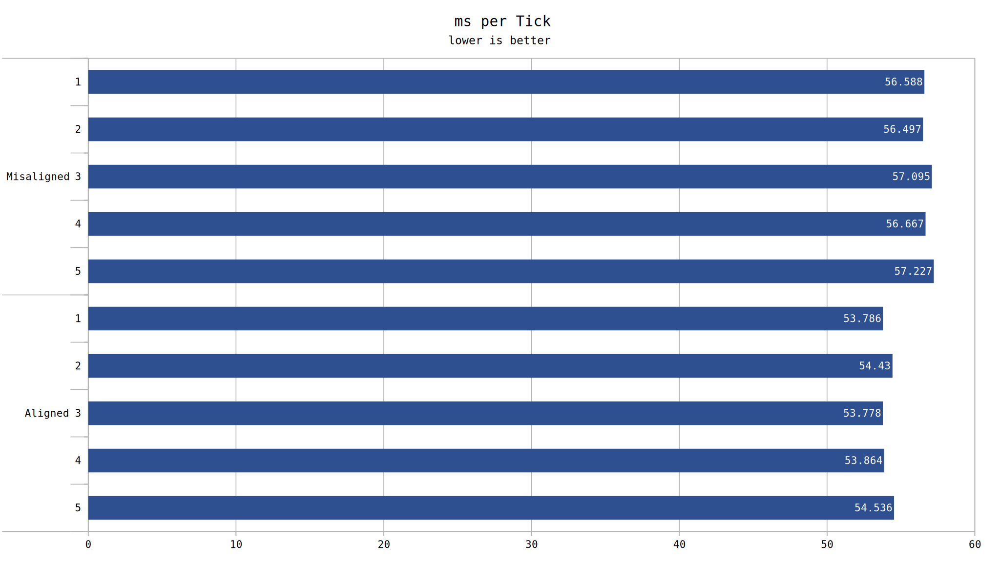

Yes, there is a tangible benefit to aligning cars to the collision grid.
Cars are free to move whereever in a tile as they please. The car collision box is 1.4w x 2.0h tiles. Depending on the precise position on the tile grid, it would be possible for the car to reside entirely within one horizontal set of 2x2 tile grid tiles (2x2 being the grid by which collision calculations are performed).
However, it is also possible for such a car to be further than (roughly) 0.3 + 1/256 from the center of a 2x2 collision grid alignment. In this case, the car is now present on twice as many 2x2 collision grid tiles.
This means that the car will perform twice as many calculations to determine which 2x2 grids it resides on, while moving. This we can call the rebind rate. By calculating the rebind rate from the speed of cars (3/32 tiles/tick on express-belt), we see that per car, the rebind rate for aligned to grid is 2.8125 rebinds/second. The misaligned configuration is exactly double, 5.625 rebinds/second.
For our test we will perform 5 runs of 5,000 ticks of benchmarking. First, we will create "tracks" for each set of cars to move forward on. Each track is long enough that for the 5,000 tick benchmark, no car will reach the end. All cars will face north to maximise the element we wish to test, and to minimise other factors. We will use exceedingly similar parameters to test-000015. Each track will be horizonally spaced apart from another such that no 2x2 grid would be shared between two cars in any case.
The vertial spacing between cars will be 5 tiles (leaving 3 tiles of gap, due to the collision box). This ensures that no 2x2 grid is ever shared between cars on the same track. Like our previous test, there is roughly 90,000 cars in total. In the first case, the cars will be created exactly at the center of the appropriate 2x2 grid. The second case is to offset car creation by 0.9 tiles from the 2x2 tilegrid. This ensures that each car is on and activates collision grids at twice the first case rate.

Viewing the data, there is a signifigant performance uplift by alignment to the collision grid. It is clear car belt designs should be collision grid aligned as much as possible.
Another question one would ask is why or what functions are resposible for this rebinding. A performance profile may be able to place the blame.
The profile data of Entity::changePosition(Vector const&) in the aligned case
The profile data of Entity::changePosition(Vector const&) in the misaligned case
The profile data of Surface::collideWithEntity(BoundingBox const&, CollisionMask, Entity const*) in the aligned case
The profile data of Surface::collideWithEntity(BoundingBox const&, CollisionMask, Entity const*) in the misaligned case
Immediately we can see 3 key functions under Entity::changePosition(Vector const&) which show a performance differential. Surface::collide(), Surface::addEntityWithoutSetup(), and Entity::release(). Surface::collide() does not show the expected twice the cost per call / twice as many calls, so we dig further into its child functions, until we get to Surface::collideWithEntity(). Our 2x cost is found at Surface::getChunkSafe() as a child function to Surface::collide()
The direct knowledge of these functions doesn't help us here much, but expenses here can be extrapolated to other tests.
In terms of absolute cost, Surface::collide() consumes roughly 1B Ir, of which 500M is contributed by Surface::getChunkSafe(), with the other half being a cost of the function itself (and therefore we can't see any further detail). A further 120M Ir is spent in Surface::addEntityWithoutSetup(), and an additional 83M spent in Entity::release(). If comparing two future designs which encouter a varying number of 2x2 collision grids, looking into the Surface::collide() function first would likely achieve the desired result sooner.
Importantly, we have determined which functions are resposible for rebinding to the collision grid. (Or, at least the ones with a signifigant performance overhead). Designs should be tuned such that possible opportunities to reduce collision grid transitions should be taken. Alignment to the center of the 2x2 grid should be executed where applicable.